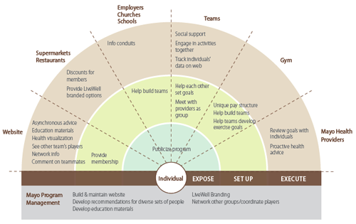
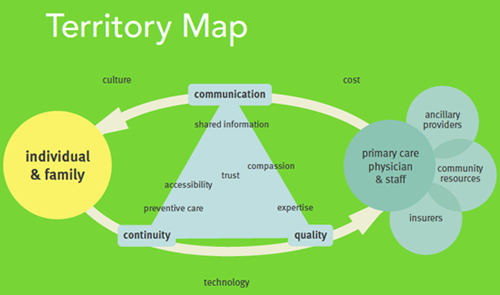
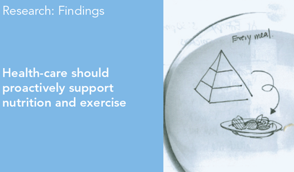
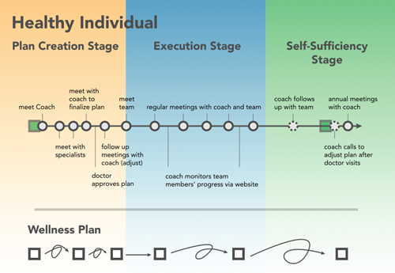

A service designed for Mayo Clinic that redefines the role of health care in daily life.
The Mayo Clinic came to Carnegie Mellon searching for fresh ideas on how to fix the health care system. Our service design class, taught by Shelley Evenson with further advisement from Design Continuum, spent the semester researching, ideating, refining, and designing our solutions.
In choosing a direction for the project, the literature I had read on the concept of Advanced Medical Home inspired the idea of looking at health care as a relationship between the patient and the provider.
I contributed research ideas to the participant journals we sent out to patients at the Mayo Clinic. These journals allowed us to assess health care needs outside of the hospital, which turned out to be the guiding influence for the rest of our design.
To present an initial design to the client, we actually acted out a typical interaction with the service for them in front of a projected background. This was a great way to bring the service to life, which is otherwise left to the imagination.
Our final design took the idea of wellness to the community level. Why just use your health care only when you get sick? Why not use it to improve the quality of life every day? Our design was very well received when myself and teammate Paul presented it to a diverse audience at the Mayo Clinic in Rochester, MN.